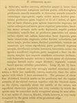

Click on images to enlarge
{kind=link}

Paropsis interioris, description
Name
Trachymela interioris (Blackburn, 1896)
Type specimen
Not examined.
Original description
[Original description shown in figure, translated from Latin using ChatGPT, 03/2026]
(Female) Somewhat ovate, moderately convex, the greatest height (seen from the side) placed about the middle of the elytra; reddish-ferruginous, with some spots on the prothorax and some spots and verrucae of the elytra blackish-pitchy; head rather closely but not strongly punctulate; prothorax longer than broad in the ratio 2 4/7 to 1, widened from the apex nearly to the base, behind the apex transversely impressed, rather closely somewhat rough (at the sides coarsely rugulose) punctate, sides less arcuate, not at all flattened, posterior angles rounded; scutellum punctured nearly as the prothorax but less closely; elytra not depressed beneath the humeral callus, behind the base transversely impressed, rather closely and strongly subseriately (at the sides more strongly, posteriorly less strongly) punctate, with rather numerous verrucae (distributed over the whole surface except the post-basal impressed part) arranged in rows; interstices anteriorly scarcely (posteriorly distinctly) rugulose, marginal area scarcely distinct from the disc, the margin itself narrowly but distinctly sloping outward; humeral callus much more distant from the suture than from the lateral margin; basal ventral segment sparsely finely punctulate. Length 4⅕ lines (~9.4 mm), width 3½ lines (~7.9 mm).
Notes
Blackburn (1896) deals with T. interioris as part of his Subgroup iii (i.e., those species without "strongly marked characters", whose greatest height is not or scarcely in front of the middle of the elytral margin and whose elytra are not depressed under the humeral callus). Within that group, he characterises it as:
(1) Elytra with a distinct postbasal impression on disc;
(2) the elytral margin (viewed from the side) straight or but little sinuous;
(3) elytral interstices not, or but very feebly, rugulose, not obscuring the punctures;
(4) prothorax not, or but little, rugulose;
(5) species of more convex form [than grossa or seriata]; upper outline (viewed from side) a continuous curve;
(6) prothorax closely punctulate;
(7) prothorax with black markings;
(8) underside testaceous (here and there infuscate).
This is almost certainly Ta84, by comparing with the description and key (and the type locality). T. interioris is very similar in structure and size to T. sloanei and T. grossa, but Blackburn does not compare them at all.
References
Blackburn, T. 1896, "Revision of the genus Paropsis. Part I", Proceedings of the Linnean Society of New South Wales, vol. 21, no. 4, 637-693 (page 683).
Copyright © 2026. All rights reserved.